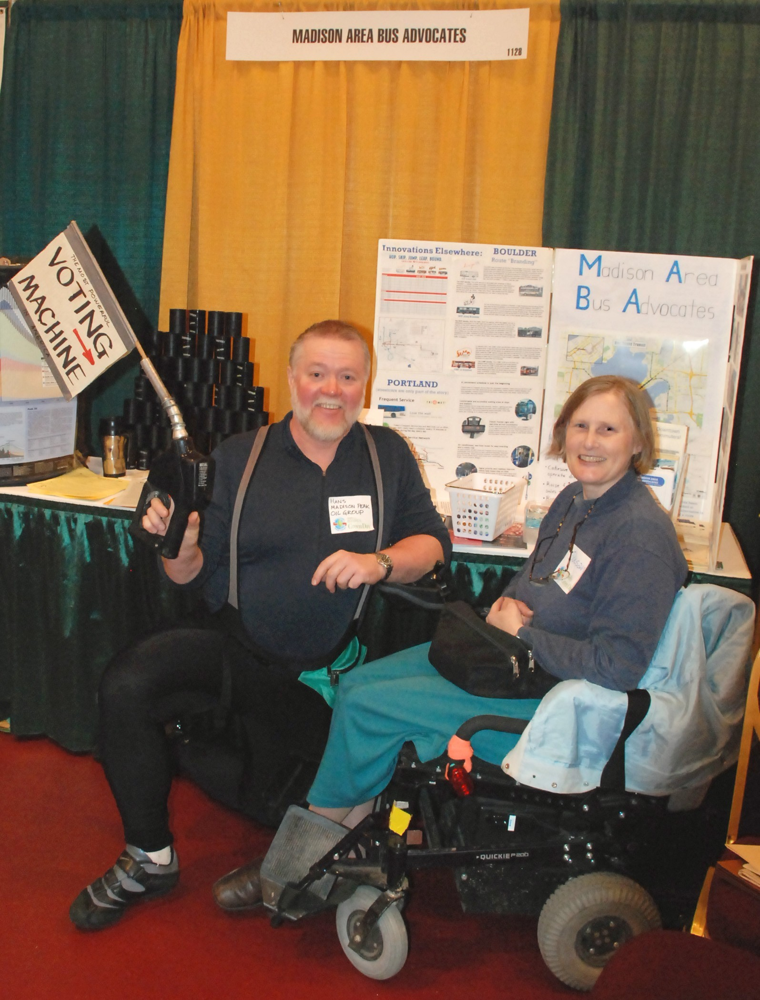

Join Us
By filling out this FORM or by mailing your name, address and phone # to:
Madison Area Bus Advocates
P.O. Box 260156
Madison, WI 53726-0156
You can donate with Zelle emailing mabaa@tds.net, with PayPal at:
or by mailing in a check to:
Madison Area Bus Advocates
P.O. Box 260156
Madison, WI 53726-0156
Annual dues are $10 (low income) or $25 (regular)
MABA is a 501(c)(3) non-profit organization, and all donations are tax deductible to the extent allowed by law.
Volunteer Opportunities
Madison Area Bus Advocates depends on you to help maintain, improve, and expand our bus system. You can help in all kinds of ways, including ways you might not expect. Your imagination is the limit. Some ways to help MABA include:
- Donate Your Talent
Whether you enjoy designing, drawing, photography, making videos, writing skits, acting, writing songs, singing, poetry, talking with people or something else, use your talents to help MABA. Your imagination is the limit. Share your ideas with info@busadvocates.org - Adopt a Bus Stop
Help your neighbors by keeping stops clear of snow and debris. Benches, shelters, bike racks, concrete pads (instead of dirt and mud) and other amenities are additional pluses. Inviting stops provide a friendly image of your area. Ideally, stops should have a 6' clearance. Park your car far enough away to provide buses sufficient clearance when pulling up to the curb. - Attend Meetings and Testify
Attend meetings on transportation and land use to meet people, listen and learn. Make sure transportation is always a consideration and promote public transportation where and when it is not now available. Whenever there is a proposed fare change, service change, or route restructure, know what those proposed changes are and testify on how the changes would affect you, your neighbors and your community. The quality of our service depends on you. - Stay Informed
Being informed is an important role of a citizen in a democratic society. Madison Area Bus Advocates has an email listserv that has a fast turnaround, and can help inform people of the latest developments in a rapidly changing situation. The listserv is also a mechanism for sharing what you know with others on a more leisurely basis. Join as joining is free, and does not automatically make you a member of MABA although most members of MABA are also on the listserv. - Write Newsletter Articles or Letters to the Editor
Keep the issue of good bus service at the forefront of people's minds by writing letters to the editor or articles for your neighborhood newsletter. Can you provide tips to neighbors based on your experience? Are there simple improvements to the present situation that would make riding easier? What might help make the bus more attractive to people? What do you want and how can we get there? - Contact Government Officials
Contact your Alder, Mayor, County Supervisor, County Executive, State Representatives, Governor, Federal Representatives and President. Tell them that good bus service is critical and ask them to take leadership in promoting public transportation at the city, county, state and/or federal level. - Share Your Research
Good transportation policy depends on informed decision making. You can help improve the bus system by researching one or more topics and preparing a summary of your findings that includes a set of recommendations.
"The most important function of transportation is to move us from being strangers towards becoming friends" - Hans Noeldner